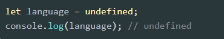

JavaScript là một ngôn ngữ lập trình thông dịch với khả năng hướng đến đối tượng. Ngôn ngữ này được dùng rộng rãi cho các trang web (phía người dùng) cũng như phía máy chủ (với Nodejs).
JavaScript được phát tiển bởi Brendan Eich tại hãng truyền thông Netscape với tên đầu tiên là Mocha. Sau đó, đổi tên thành LiveScript và cuối cùng là JavaSript được sử dụng phổ biến tới thời điểm bây giờ.
Phiên bản mới nhất của JavaScript là ECMAScript (là phiên bản chuẩn hóa của JavaScript). Với ECMAScript 2 phát hành năm 1998 và ECMAScript 3 được ra mắt năm 1999 và hoạt động mạnh mẽ trên mọi trình duyệt và các thiết bị khác nhau.
Năm 2016, JavaScript đạt kỷ lục đến 92% website sử dụng và được đánh giá từ một ngôn ngữ lập trình riêng trở thành công cụ quan trọng nhất trên các bộ công cụ lập trình web của các lập trình viên. Nếu bạn sử dụng internet khi truy cập vào các website, có thể nhìn thấy các hiệu ứng slide ảnh chuyển động, menu sổ xuống,…đều được tạo nên từ JavaScript.
JavaScript thường sẽ được nhúng trực tiếp vào một trang web hoặc được tham chiếu qua file .js riêng. JavaScript là ngôn ngữ từ phía client nên script sẽ được tải về máy client khi truy cập và được xử lý tại đó. Thay vì tải về máy server và sau khi xử lý xong mới phản hồi kết quả đến client.
Nhúng Internal có thể hiểu là chúng ta chèn code JavaScript vào một cụm nào đó trong tập tin HTML. Thông thường thì anh em hay nhóm nó vào trong cặp thẻ head hoặc body.

Đối với cách nhúng inline chúng ta có thể chèn ngay vị trí bất kỳ của một dòng code HTML.

Đối với kiểu External ta sẽ tạo ra một file Java Script và lưu dưới định dạng .JS. Trong thẻ script của file html chúng ta sẽ khai báo đường dẫn đến file đã lưu theo cú pháp như ở bên dưới. Ta có thể khai báo trong thẻ head hoặc body. Ví dụ như bên dưới.
Ta cũng có thể nhúng nhiều file JS khác nhau vào HTML
Ngoài ra trong kiểu nhúng External, ta có thể nhúng từ 1 file JavaScript có đường dẫn bất kỳ trên internet.cách này có tên gọi là: External References. Cú pháp như ví dụ bên dưới.

Kiểu dữ liệu là một cách phân loại dữ liệu cho trình biên dịch hoặc trình thông dịch hiểu về kiểu của dữ liệu đang sử dụng.
Đối với nhiều ngôn ngữ lập trình, khi khai báo một biến, bạn phải chỉ rõ biến đó thuộc kiểu dữ liệu gì. Nhưng đối với JavaScript thì khác, một biến có thể thuộc bất kỳ kiểu dữ liệu nào.
JavaScript có 8 kiểu dữ liệu cơ bản, trong đó, có 7 kiểu dữ liệu nguyên thủy (boolean, null, undefined, number, BigInt, string, symbol) và 1 kiểu dữ liệu dạng tham chiếu (object). Trong đó:
Boolean là kiểu dữ liệu logic chỉ bao gồm hai giá trị là true (đúng, chính xác) và false (sai, không chính xác). Ví dụ:
Kiểu dữ liệu null là một kiểu dữ liệu đặc biệt, chỉ bao gồm một giá trị là null. Có thể được hiểu là không có giá trị. Ví dụ:
Cũng tương tự như null, undefined là một kiểu dữ liệu đặc biệt trong JavaScript, chỉ bao gồm một giá trị undefined. Kiểu dữ liệu undefined có nghĩa là chưa xác định hay là giá trị chưa được gán. Ví dụ:
Trường hợp biến đã có giá trị rồi, bạn vẫn có thể chủ động gán lại giá trị undefined cho biến. Tuy nhiên, điều này là không nên. Vì như vậy là không đúng ý nghĩa của kiểu dữ liệu undefined .
Kiểu dữ liệu number là kiểu dữ liệu dạng số (tương tự trong toán học). Number trong JavaScript không có cú pháp gì đặc biệt. Bạn chỉ cần viết số ra. JavaScript có hai loại số là: số nguyên và số thực. Ví dụ:
Ngoài những loại số trên, JavaScript còn có 3 số đặc biệt là: Infinity, -Infinity và NaN.
==> Nhờ những số đặc biệt này mà việc tính toán trong JavaScript sẽ không bị lỗi do chia cho 0 hay các giá trị không phải là số.
Trong JavaScript, kiểu dữ liệu number không thể biểu diễn một số nguyên lớn hơn (253-1) (bằng 9007199254740991) hay nhỏ hơn -(253-1).
Với hầu hết các trường hợp, việc sử dụng kiểu dữ liệu number là quá đủ. Nhưng đôi khi, bạn vẫn cần biểu diễn và tính toán với những số nguyên cực kỳ lớn. Do đó, kiểu dữ liệu BigInt ra đời nhằm giải quyết vấn đề này.
Để biểu diễn số nguyên với kiểu BigInt, bạn chỉ cần thêm chữ cái n ở phía sau. Ví dụ:
Cú pháp khai báo như sau:
Trong đó:
Ví dụ:
Thông thường, các toán tử và các hàm sẽ tự động chuyển đổi kiểu của giá trị về đúng. Ví dụ như: alert sẽ tự động chuyển bất kỳ kiểu dữ liệu nào về string để hiển thị chúng, các toán tử toán học sẽ tự động chuyển về kiểu number để thực hiện tính toán. Tuy nhiên trong nhiều trường hợp chúng ta muốn chuyển đổi kiểu về kiểu dữ liệu mà chúng ta mong muốn ta có thể sử dụng các cách dưới đây.
Khi chúng ta cần chuyển đổi kiểu của một value sang string chúng ta có thể sử dụng String(). Ví dụ:

Ngoài việc sử dụng String() thì chúng ta cũng có thể sử dụng toString() để ép kiểu các giá trị về string:
Khi sử dụng toán tử, chúng ta đặc biệt phải lưu ý đến toán tử + khi toán hạng có kiểu string. Khi chúng ta sử dụng toán tử + mà một trong các toán hạng có kiểu là string thì Javascript sẽ cố gắng ép kiểu của toán hạng còn lại về kiểu string. Như ví dụ dưới đây: kiểu dữ liệu trả về của y sẽ là String
Khi chúng ta muốn chuyển đổi từ một giá trị khác sang giá trị kiểu number, chúng ta có thể sử dụng Number()
Khi chúng ta thêm toán tử "+" vào trước giá trị thì kiểu dữ liệu của giá trị đó sẽ chuyển về giống như khi sử dụng Number()
Thông thường, ta sẽ không ép kiểu dữ liệu về Boolean mà thường để JavaScript tự ép kiểu. Ví dụ.
Trong trường hợp cần chủ động ép kiểu về Boolean, ta có thể sử dụng Boolean()
Khi chúng ta ép kiểu một object về string hoặc number thì Javascript sẽ cố gắng tìm và gọi 3 object methods như sau:
Kết quả
Methods toString và valueOf là 2 method cũ, nếu không tìm thấy Symbol.toPrimitive thì Javascript sẽ cố gắng gọi đến chúng theo thứ tự:
Theo mặc định, đối với một object đơn giản:
Vậy chúng ta muốn giá trị trả về là giá trị mà chúng ta mong muốn giống như sử dụng Symbol.toPrimitive thì chúng ta sẽ cần sử dụng kết hợp toString và valueOf như sau
Kết quả trả về
Giống như nhiều ngôn ngữ lập trình khác, JavaScript có các biến. Các biến có thể được coi là các thùng chứa có tên. Bạn có thể đặt dữ liệu vào các vùng chứa này và sau đó tham khảo dữ liệu chỉ bằng cách đặt tên vùng chứa.
Các biến JavaScript được lưu trữ trong bộ nhớ của browser process ( tiến trình trình duyệt) hiểu nôm na 1 cách đơn giản là biến được lưu trong phần Ram mà trình duyệt đang sử dụng.
Để khai báo một biến ta sử dụng từ khóa const, let, var.
const được sử dụng để khai báo 1 hằng số, và giá trị của nó không thay đổi trong suốt chương trình.
let khai báo biến chỉ có thể truy cập được trong block bao quanh nó được xác định bằng cặp {}.
var khai báo biến có thể truy cập ở phạm vi hàm số hoặc bên ngoài hàm số, toàn cục.
Khi khai báo biến ta không cần phải khai báo kiểu của biến đó trước khi dùng. Kiểu sẽ được tự động xác định trong lúc chương trình được thực thi. Điều đó cũng có nghĩa là một biến có thể chứa giá trị của các kiểu dữ liệu khác nhau. Ví dụ:
Có hai loại phạm vi trong JavaScript. biến cục bộ (local scope) và biến toàn cục (global scope). Biến toàn cục được khai báo ngoài hàm , trong khi đó biến cục bộ được lưu khai báo bên trong một hàm.(Nên với cùng một tên biến, ta có thể khai báo ở những hàm khác nhau).
Một biến toàn cục có thể được truy cập từ bên ngoài của hàm cũng như bên trong của hàm nhưng, một biến cục bộ chỉ có thể được truy cập bên trong hàm. Nếu truy cập từ bên ngoài của hàm, bạn sẽ nhận được lỗi 'undefined variable' (biến không xác định).